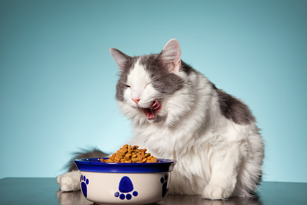

07 Jan 2022
2

A importância da alimentação balanceada na dieta alimentar de gatos
Oferecer alimento caseiro, seja para o cão ou para o gato, pode acarretar em vários inconvenientes como doenças nutricionais ocasionadas por carência ou excesso de nutrientes; excesso de gordura e consequentemente o sobrepeso; excesso de sal que sobrecarrega a função renal; excesso de carboidratos e de proteínas. É muito importante que os proprietários estejam cientes que a comida oferecida aos humanos fazem mal aos pets.